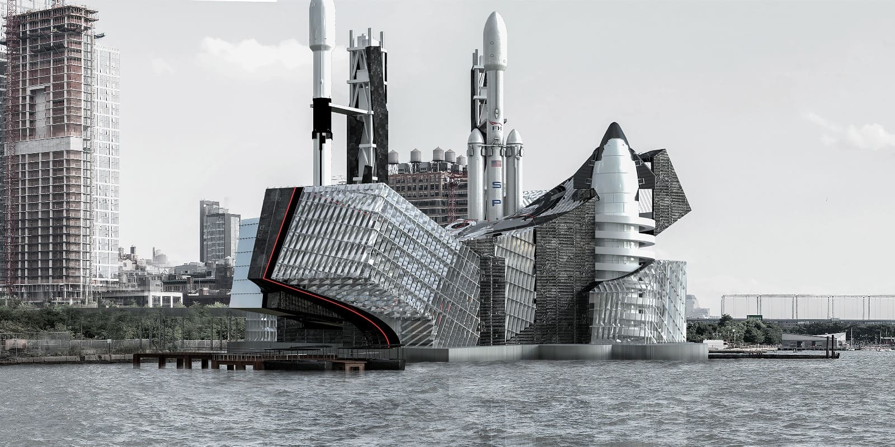

Preston Kwok
I'm Preston and I’m trying to be an architect. I studied architecture at Rensselaer Polytechnic Institute (RPI) in Troy, New York and recently started at Corgan in Dallas, Texas. I work in the commercial sector, designing offices, malls, and public spaces. Honestly, I’m not even sure why I chose commercial — I just like it.
BUILT DIFFERENT
Pretty much every kid, including me, played legos when they were younger. I didn't just
build it and leave it there. I would always build it, deconstruct it, and build it in a
new way. I took pictures of buildings without even knowing why. After taking this architecture
class in high school, that really hit the nail in the hammer — if that's a phrase. I
don't think I would know how to do anything else anyway.
I definitely miss school, miss studio culture. Having those 3 AM sessions at the studio with my boys grinding out drawings, renderings, building models. I honestly did not have a single moment where I wanted to drop out. I usually strive to be the best at everything, that mindset helped motivate me to finish. I felt like I was too deep into this. Having to keep that mentality for 5 years was kind of a struggle, but that motivation helped me improve myself. I wanted people to look up to me in terms of my designs, renderings, and all that stuff.
I don't think my style can be categorized. My design reflects the experience of the person experiencing
it by repeating shapes and forms. It's not just smashing pieces into each other until it works,
but each form smoothly transitions between one place to another.
I definitely miss school, miss studio culture. Having those 3 AM sessions at the studio with my boys grinding out drawings, renderings, building models. I honestly did not have a single moment where I wanted to drop out. I usually strive to be the best at everything, that mindset helped motivate me to finish. I felt like I was too deep into this. Having to keep that mentality for 5 years was kind of a struggle, but that motivation helped me improve myself. I wanted people to look up to me in terms of my designs, renderings, and all that stuff.

SpaceX's Central Spaceport along the Hudson River. Design by Preston Kwok and Zonglin Li.
YOUR DESIGN ISN'T YOUR OWN
People have told me that my design didn't work. I felt horrible cause I spent so much time on it.
There was an apartment housing studio project that we did and I thought it worked out. But I was
owning the project. I was too blindsided on all the problems that were made because I was just
focusing on if it looks good.
We’ve been taught that you shouldn't get too attached to your projects. Your personality isn't
attached to the building, so don't feel bad when people say that your design is ugly. When I
realized that I started to take criticism as a growing experience rather than negativity. Those
criticisms can improve my design — not saying that all the crits I received were always right. I
would try to find a middle ground, juggling between what I think was right versus what they say was right.
Crits will affect you a good amount unless you realize to take it more as a learning experience than they just hate on you. If the prof started bashing on you as a person… [Laughs] that’s a whole other topic, but if they bash on your project just don't take it to heart.
Apartment Housing Studio Project. Design by Preston Kwok.
Crits will affect you a good amount unless you realize to take it more as a learning experience than they just hate on you. If the prof started bashing on you as a person… [Laughs] that’s a whole other topic, but if they bash on your project just don't take it to heart.
ARCHITECT OR SERVANT?
During my 2nd year, my internship at Ronald & Lu was more of a learning experience than anything. I learned
that I prefer the US work culture a lot more than Asia. Hong Kong was a lot more intensive. It was 9 to 6,
and [Laughs] I assume people stayed longer than 6 over there. Here is more laid back, more collaborative.
At 5, everyone just dips, rarely anyone stays past 6. It's just how different cultures are.
I think Corgan is a good choice. I feel proud of it. The work culture isn't toxic, unlike [cough] KPF, another super well-known firm based in New York that specializes in skyscrapers. They did the One World Trade Center, and that observation deck — the super tall triangular building you can see from a mile away. Based on my professors, they say that work experience there is super toxic and always has competition. I'm glad that Corgan is not like that.
I mean I like my job at Corgan cause I get paid. But so far, I don't have that much creative intake in the projects because I'm new. I'm not gonna say slave, but when I'm a [pauses] servant-architect, I just do drawings and fix the red lines. But I honestly do not care as long as I have something to do. As long as I can do my job I'm happy.
I think Corgan is a good choice. I feel proud of it. The work culture isn't toxic, unlike [cough] KPF, another super well-known firm based in New York that specializes in skyscrapers. They did the One World Trade Center, and that observation deck — the super tall triangular building you can see from a mile away. Based on my professors, they say that work experience there is super toxic and always has competition. I'm glad that Corgan is not like that.
I mean I like my job at Corgan cause I get paid. But so far, I don't have that much creative intake in the projects because I'm new. I'm not gonna say slave, but when I'm a [pauses] servant-architect, I just do drawings and fix the red lines. But I honestly do not care as long as I have something to do. As long as I can do my job I'm happy.
SEEING SPACES DIFFERENTLY
Photography is something that I recently started to enjoy. I talked to the in-house photographer in
Corgan and got invited to one of his shoots at the Wells Fargo headquarters that recently opened. Seeing
the process of starting from 5 AM in the morning and ending at sunset seems more interesting to me than just
sitting and drawing. They travel all around and then just retake shoots and shoots.
I think I'm best at showing the building's potential and how it is. At the end of the day, anyone could just
look at a building and think “Oh that's cool.” But I think architecture photography highlights the different
moments in the designer's process of thinking. Having those moments captured makes the building even more recognizable.
I want to be the next Iwan Baan, a world-famous architecture photographer that I recently started to look up to. All the famous architecture firms would hire him to shoot their newest buildings and I want to do the same.
Grundtvig's Church in Copenhagen, Denmark. Photo by Preston Kwok.
I want to be the next Iwan Baan, a world-famous architecture photographer that I recently started to look up to. All the famous architecture firms would hire him to shoot their newest buildings and I want to do the same.
AI WON'T KILL THE ARCHITECT
There was another talk I listened to a couple weeks ago saying people were scared of AI taking over architecture.
The speaker, Dawn Meinhardt, has been working for almost 40 years. When she was just starting, they had
pen and paper. Over a course of 10, 20 years they slowly started to learn basic computer drawing, and another 10
years they advanced to fully computer.
AI can make images look pretty and tell basic info of how a building works, but I don't think it has that human design element. It imitates what the human would design, but it doesn't have its own mind yet.
Just because all these new technologies are emerging, it doesn't mean that's gonna take over. It means it can help speed up the process for designers and architects. So far AI can't replace architects yet. I say “yet” because I'll probably die before then.
AI can make images look pretty and tell basic info of how a building works, but I don't think it has that human design element. It imitates what the human would design, but it doesn't have its own mind yet.
Just because all these new technologies are emerging, it doesn't mean that's gonna take over. It means it can help speed up the process for designers and architects. So far AI can't replace architects yet. I say “yet” because I'll probably die before then.

DOOR
6
ARCHIVE
SUBJECT: PRESTON KWOK
DATE: DEC 12, 2025
Preston - it's weird calling him Preston because I call him Gogo [哥哥] - has been there my whole life.
That has been both a good thing and bad thing. For the longest time it's been the latter. Still is.
I didn't really pay attention to architecture until he kept pointing out where the fire gates in malls were. It's nice knowing that I have a sibling in a design-adjacent industry.
DATE: DEC 12, 2025
Preston - it's weird calling him Preston because I call him Gogo [哥哥] - has been there my whole life.
That has been both a good thing and bad thing. For the longest time it's been the latter. Still is.
I didn't really pay attention to architecture until he kept pointing out where the fire gates in malls were. It's nice knowing that I have a sibling in a design-adjacent industry.